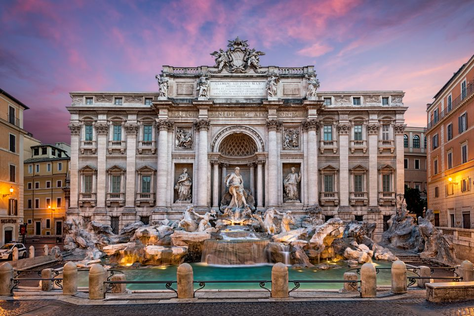
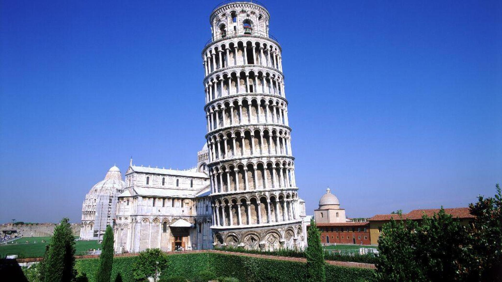

| Point of Interest |
About |
Picture |
| Colosseum |
The Colosseum is located in Rome in the centre of the city.
It is the largest amphitheatre and seats more than 50 000 people.
It's known for its history in Ancient Rome as a viewing for combat
between people, animals, or both. It is currently in restoration ever
since 1990 from the effects of neglect. This is a global attraction for
tourists.
|
 |
| Amalfi Coast |
The Amalfi Coast is one of the coastlines of the Salerno Gulf and is known for
its beautiful architecture, having its buildings on the mountain. Pictures almost
appear as if it were a painting, but it incredibly is not. The beauty is what
attracts all tourists to this tucked away part of Italy. |
 |
| Trevi Fountain |
The Trevi Fountain is located in Rome and is known for its dramatic beauty, as it
is decorated with sculptures. There is a legend for visitors that if they throw a coin
into the fountain, it is ensured they will return to Rome. Its known to be one of the oldest
water sources in rome and uses 2 824 800 cubic feet of water everyday. |
 |
| Leaning Tower of Pisa |
The Leaning Tower of Pisa is located in Pisa and is known for its leaning state. This
is a remarkable piece for architectures, as careful measurements must have been made to
create this state for the building. The tower contains a bell at the top, hence it is a
bell tower. It has stayed up since 1399. |
 |